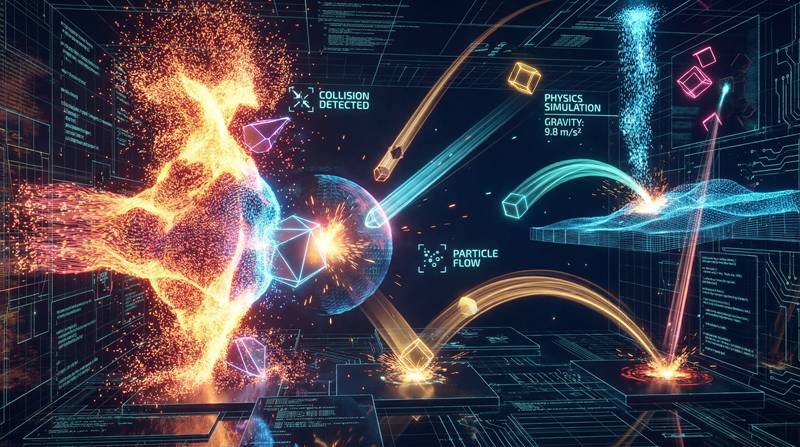

返回课程列表
第二课
静力学基础
防御塔受力与英雄站位的力学平衡
⏱️ 约45分钟
在王者荣耀中，防御塔是最重要的防御工事，英雄的站位决定了团战的胜负。这些都可以用静力学的平衡原理来分析。
防御塔的力学模型
防御塔可以看作一个固定的力学系统：它有固定的攻击范围（力的作用域）、固定的攻击力（力的大小）和固定的攻击目标优先级（力的方向）。

塔下作战的力学分析
防御塔机制的力学类比：
- 攻击范围：防御塔攻击范围是一个圆形区域，类似力场的作用范围
- 目标切换：塔优先攻击攻击己方英雄的敌人，类似力的优先级
- 伤害递增：连续攻击同一目标伤害递增，类似力的累积效应
- 越塔强杀：需要计算塔伤害与自身血量的平衡点
团战站位的稳定性
团战中的站位就像力学中的稳定平衡。前排坦克承受伤害（承受力），后排输出造成伤害（施加力），辅助提供增益（辅助力）。
阵型的力学稳定性
团战站位的力学原理：
- 前排抗压：坦克站在最前面承受伤害，如同结构的承重柱
- 后排输出：射手和法师站在安全距离输出，如同远程力的作用
- 侧翼包抄：刺客从侧面切入，打破对方阵型平衡
- 三角站位：三人组成三角形站位最稳定，不易被一个技能全部命中